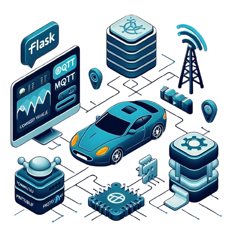

Projects#
Explore my projects below.
Want to see more? Head over to my GitHub profile for more comprehensive look.
ESP32 Crash Diagnostics in QEMU
This project dives into ESP32 crash diagnostics workflow on QEMU. It integrates ESP-IDF firmware running under FreeRTOS with deliberate fault injection, coredump capture, and CRC validation. It is containerized for codespace for consistency across environments. Crash logs are uploaded and parsed and the Flask based server end.

Connected Vehicle Protocol Server
The CVP Proto Server is a Flask-based application designed for handling MQTT communication with protobuf-encoded telemetry messages for connected vehicles. It features a user-friendly web interface with real-time updates via Socket.IO, and also includes a Command Line Interface (CLI) for direct command-response operations.

Open-Set Multi-Source Multi-Target Domain Adaptation
Rohit Lal, Arihant Gaur, Aadhithya Iyer, Muhammed Abdullah Shaikh, Ritik Agrawal, Shital Chiddarwar
Pre-Registration Workshop, NeurIPS, 2021
project page | arXiv | video | code
This work introduced a new setting for unsupervised domain adaptation and utilized a prototypical network to create domain embeddings. We used the Local Outlier Factor (LOF) to pseudo-label unknown classes, and used graph neural networks with attentional aggregation for the adaptation stage.

|
Face UnlockMuhammed Abdullah, Khurshed Fitter, Rishika Bhagwatkarproject page | pdf | code This project implemented Triplet Network and FaceNet algorithms from scratch with ResNet as the backbone architecture for face recognition. It was developed at IvLabs for one-shot and few-shot learning on different datasets and with the goal of deploying it as a face recognition-based door lock system. |

|
Object DetectionHarsh Sharma, Rajashree Tekaday, Muhammed Abdullahcode This project is an implementation of a sliding window technique with a two-stage detector, enhanced with the Overfeat framework, for object detection on a Raccoon Dataset. |

|
PID Control and Path Planning for TurtleBot in ROSMuhammed Abdullahcode This project involved implementing a PID controller on a TurtleBot robot to perform a Goal-to-Goal task and Path Planning task. The controller was modeled using a Hermite curve to generate a trajectory for the robot's motion from the initial to the goal pose. |
Mini-Projects#
{kind=link}

Bezier Curves
project page | code # TODO